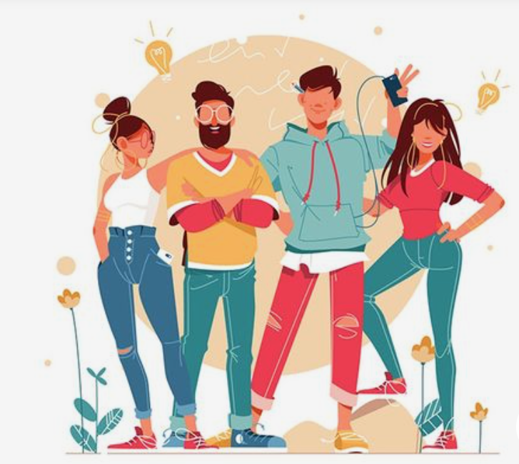

Suppart

Ogni giorno su internet vengono creati decine di miliardi di dati, da foto a video ad articoli e post e in un luogo dove chi primo arriva più prende, un piccolo nuovo artista che inizia la sua attività online si ritroverebbe con il suo lavoro subito sommerso da lavori di artisti già affermati sul mercato. Ci poniamo, perciò, come base fondamentale l’accompagnamento di piccoli artisti nel loro processo di crescita e di acquisizione clienti, tutelandone in modo univoco e del tutto trasparente le rispettive proprietà intellettuali.
Suppart è una piattaforma Web per artisti emergenti in cui ogni visitatore avrà la possibilità di pubblicare e vendere i propri contenuti, rilassarsi leggendo nuove storie, connettersi con il proprio creatore preferito supportandolo dalle live interne o abbonandosi. L’obiettivo di Suppart è di dare voce ai talenti, un trampolino di lancio che si pone tra l’artista e un potenziale cliente per poter creare velocemente collaborazioni...
Con protocolli interni di standard di qualità assieme a sistemi di controllo del Copyright tramite creazione di Non Fungible Tokens generati su Waves Blockchain, la piattaforma garantisce che ogni lavoro presente sulla piattaforma sia originale, tracciabile e realmente appartenente a chi lo ha postato. Garantisce all’artista pieno controllo ed una certificazione ad attestare la sua autenticità e credibilità. Suppart premia l’unicità delle idee eliminando sul nascere possibili controversie garantendo un clima di rispetto tra le parti.
